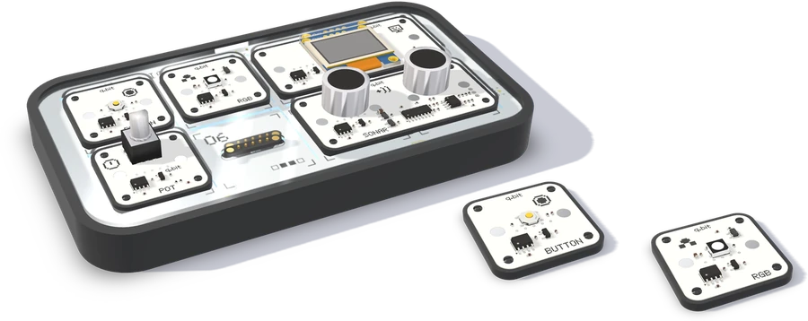
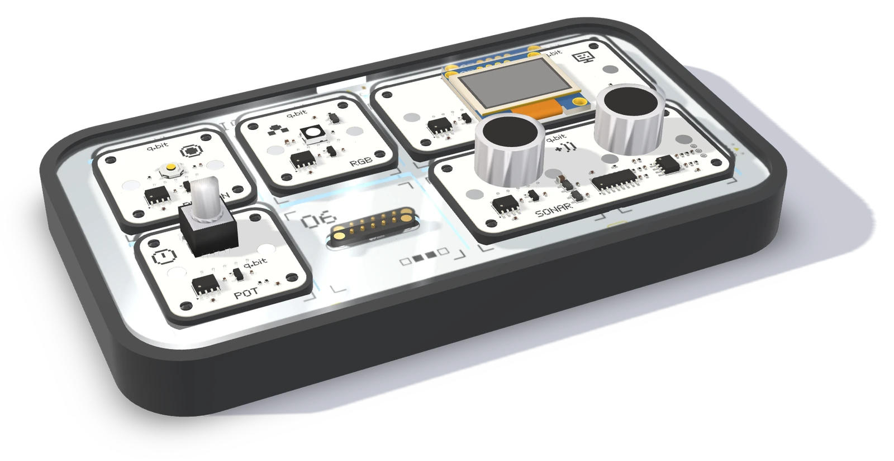
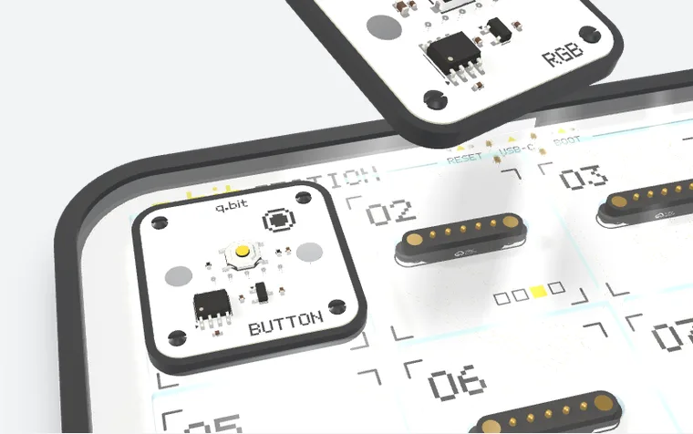
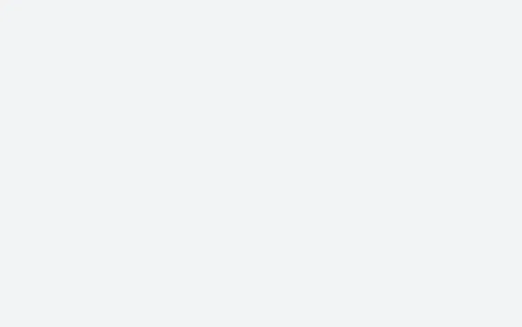
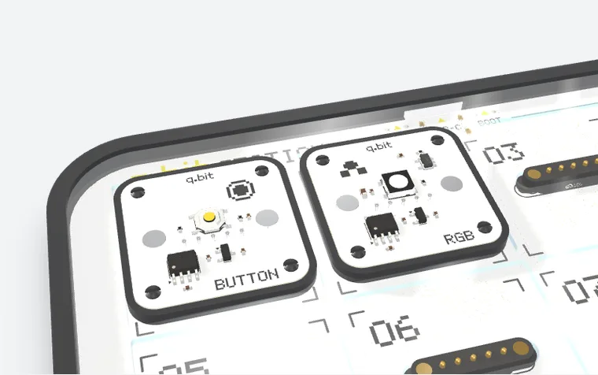
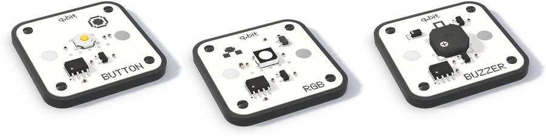
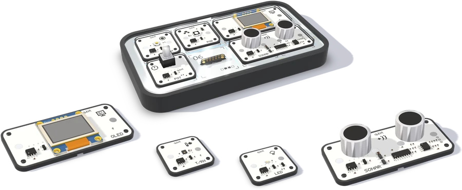

Стартовый комплект
Станция и 12 модулей — первая покупка семьи или класса.


q.bit · сделано в Узбекистане
q.bit station — конструктор электроники и программирования для детей 7–18 лет.
Проблема
Слишком много нужно понять раньше, чем появится первый результат.
Решение
Модули на магнитах и программа из блоков в браузере. Первый результат — на первом же уроке.

Четыре шага на одном примере: кнопка в порту 1 включает RGB в порту 2.




Станция, 32 модуля и редактор — одна система

кнопки, датчики, дисплеи, моторы

редактор qblock и симулятор в браузере · RU · UZ · EN

Редактор
Программа из блоков собирается за минуту и сразу работает — на станции или в симуляторе.
Наборы
Начните со стартового комплекта и докупайте модули под новые проекты.
Станция и 12 модулей — первая покупка семьи или класса.

32 типа, докупаются по одному под новый проект.
Все 32 модуля и уроки — для школ и учебных центров.

Симулятор станции работает в браузере — без установки и без железа.